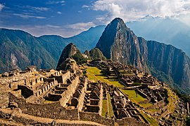
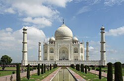
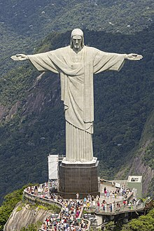

7 Wonders of The World
wonders of the world are 7 most spectacular natural and artificial build of our world in both past and present.
This page will give detail on the new 7 wonders of the world which was choosen in 2001 A.D by an initiative for creating new 7 wonders of the world.
New 7 Wonders of The World
- 1. The Great Wall of China
- Since 7th century BC

- 2. Petra
- c. 100 BC
- 3. Colosseum
- completed AD 80

- 4. Chichen Itza
- c. AD 600
- 5. Machu Picchu
- c. AD 1450

- 6. Taj Mahal
- completed c. AD 1648

- 7. Christ the Redeemer
- opened to the public October 12, 1931
